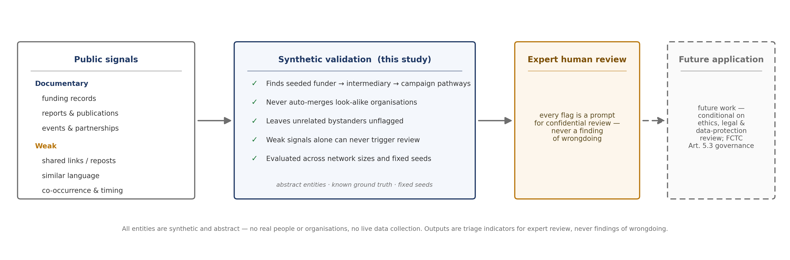
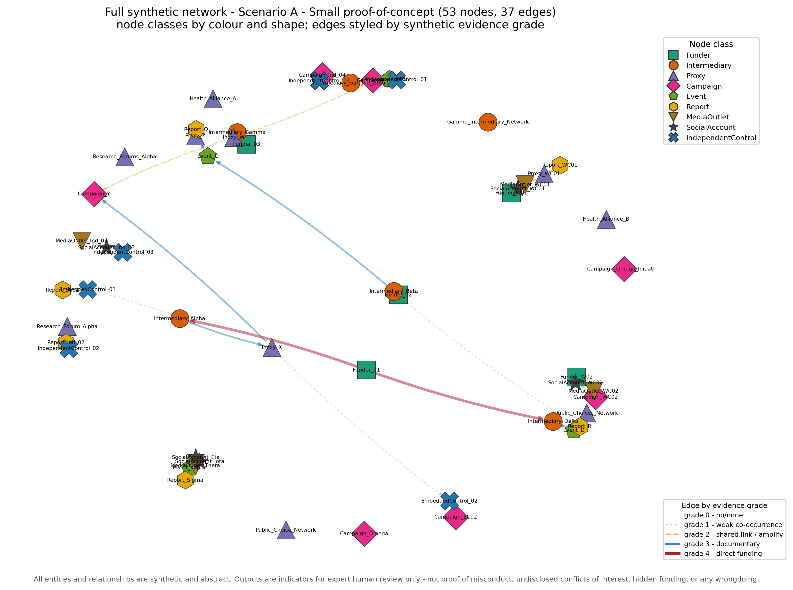
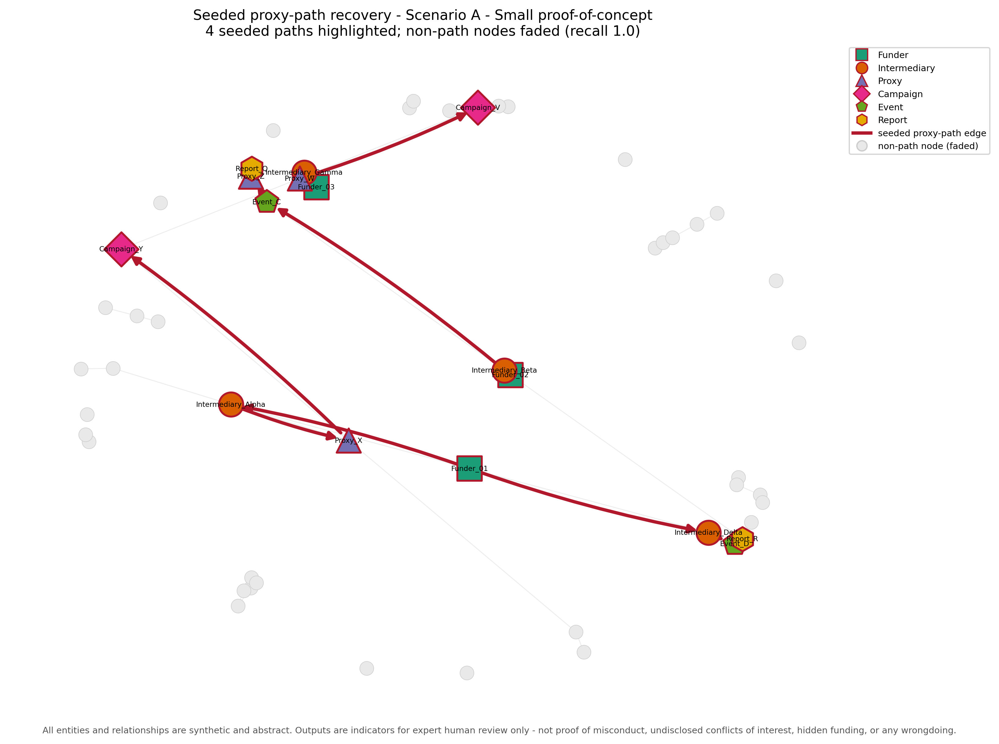
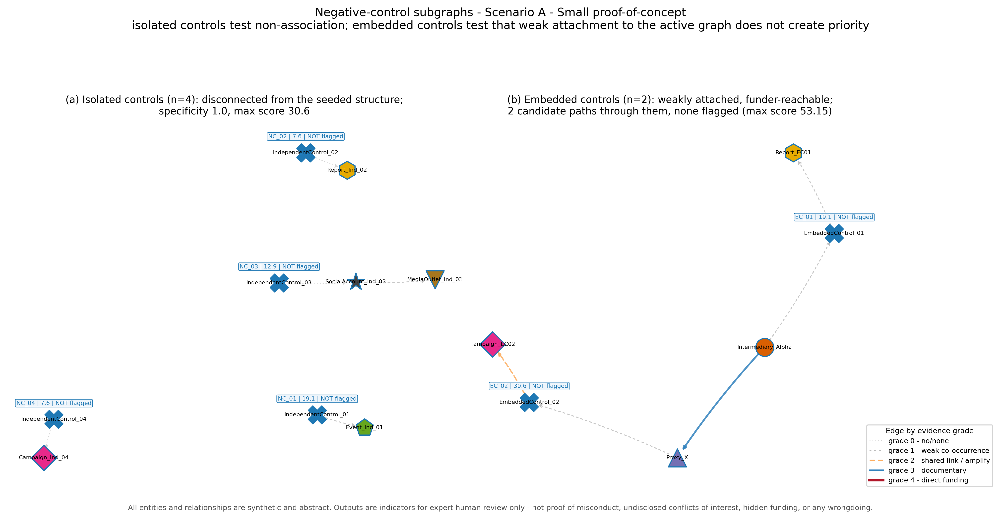
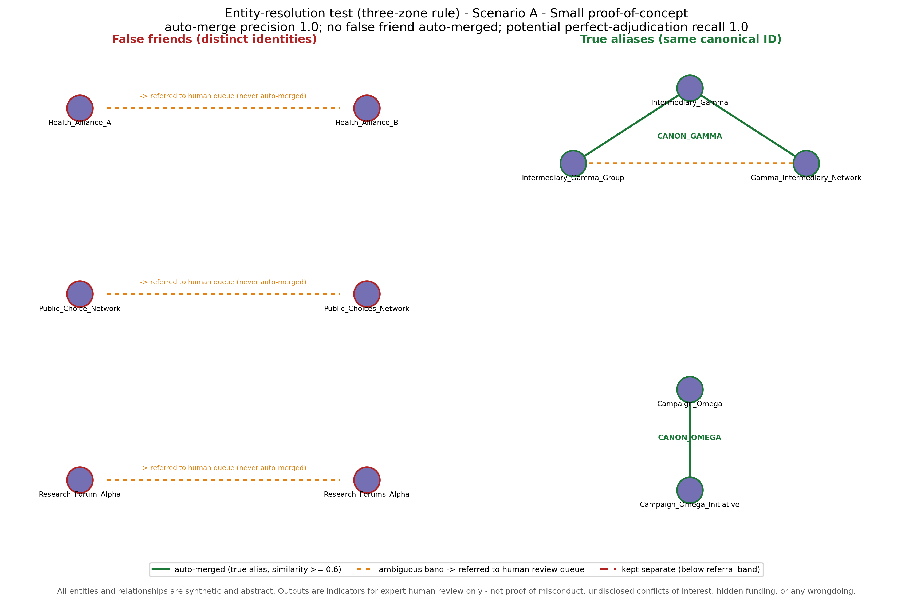
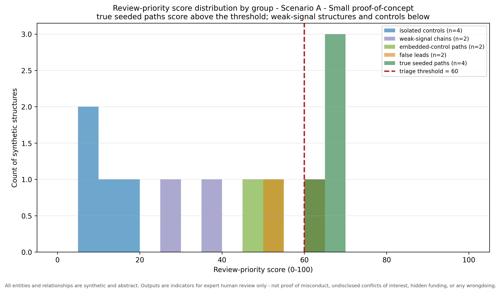
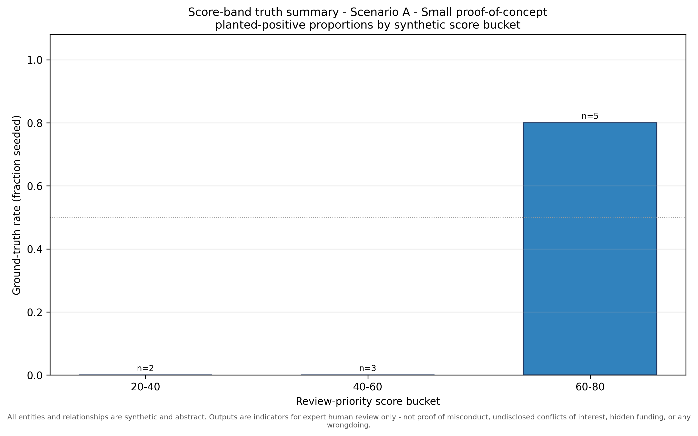
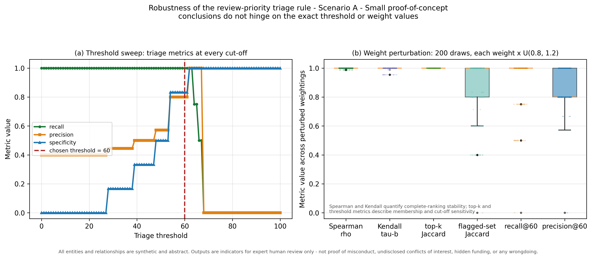

Synthetic validation harness (seed = 42).
| Quantity | Value |
|---|---|
| Total nodes | 53 |
| Total edges | 37 |
| Node classes | 9 |
| Relationship types | 11 |
| Seeded proxy paths | 4 |
| Candidate paths | 10 |
| False-friend entities | 6 |
| True-alias groups | 2 |
| Negative-control subgraphs | 6 |
| Weak-signal chains | 2 |
Triage threshold: 60.0 / 100. Scores are triage indicators for expert review only.
| Path ID | Node sequence | Relationship types | Grades |
|---|---|---|---|
| GT_PATH_01 | Funder_01 -> Intermediary_Alpha -> Proxy_X -> Campaign_Y | funds -> partners_with -> hosts | 4 -> 3 -> 3 |
| GT_PATH_02 | Funder_02 -> Intermediary_Beta -> Event_C -> Proxy_Z -> Report_Q | funds -> hosts -> speaks_at -> publishes | 4 -> 3 -> 3 -> 3 |
| GT_PATH_03 | Funder_03 -> Intermediary_Gamma -> Proxy_W -> Campaign_V | funds -> partners_with -> amplifies | 4 -> 3 -> 2 |
| GT_PATH_04 | Funder_01 -> Intermediary_Delta -> Event_D -> Report_R | funds -> hosts -> publishes | 4 -> 3 -> 3 |
| ID | Node sequence | Score |
|---|---|---|
| GT_PATH_01 | Funder_01 -> Intermediary_Alpha -> Proxy_X -> Campaign_Y | 67.80 |
| GT_PATH_04 | Funder_01 -> Intermediary_Delta -> Event_D -> Report_R | 67.80 |
| GT_PATH_02 | Funder_02 -> Intermediary_Beta -> Event_C -> Proxy_Z -> Report_Q | 65.78 |
| GT_PATH_03 | Funder_03 -> Intermediary_Gamma -> Proxy_W -> Campaign_V | 63.80 |
Path-recovery recall 1.0; precision 0.8.
None - all seeded proxy paths were recovered.
| Candidate ID | Node sequence | Score |
|---|---|---|
| CAND_0008 | Funder_03 -> Intermediary_Gamma -> Proxy_W -> Campaign_Y | 61.3 |
Passed to human review as possible leads only. 1 contain a weak (grade ≤ 2) hop; 0 consist entirely of documentary-grade (≥ 3) hops and require full manual verification.
| Control ID | Type | Nodes | Score | Flagged | Explanation |
|---|---|---|---|---|---|
| NC_01 | isolated | IndependentControl_01; Event_Ind_01 | 19.10 | 0 | score 19.10 is below the threshold of 60.0; this isolated control (disconnected from the seeded structure) is correctly not flagged |
| NC_02 | isolated | IndependentControl_02; Report_Ind_02 | 7.60 | 0 | score 7.60 is below the threshold of 60.0; this isolated control (disconnected from the seeded structure) is correctly not flagged |
| NC_03 | isolated | IndependentControl_03; SocialAccount_Ind_03; MediaOutlet_Ind_03 | 12.95 | 0 | score 12.95 is below the threshold of 60.0; this isolated control (disconnected from the seeded structure) is correctly not flagged |
| NC_04 | isolated | IndependentControl_04; Campaign_Ind_04 | 7.60 | 0 | score 7.60 is below the threshold of 60.0; this isolated control (disconnected from the seeded structure) is correctly not flagged |
| EC_01 | embedded | EmbeddedControl_01; Report_EC01 | 19.10 | 0 | score 19.10 is below the threshold of 60.0; this embedded control (weakly attached to the active graph, reachable from a funder) is correctly not flagged |
| EC_02 | embedded | EmbeddedControl_02; Campaign_EC02 | 30.60 | 0 | score 30.60 is below the threshold of 60.0; this embedded control (weakly attached to the active graph, reachable from a funder) is correctly not flagged |
Isolated-control specificity 1.0; embedded-control specificity 1.0 over 2 funder-reachable candidate paths (max candidate score 53.15).
| Surface A | Surface B | Type | Sim. | Zone | Outcome | Explanation |
|---|---|---|---|---|---|---|
| Health_Alliance_A | Health_Alliance_B | false_friend | 0.500 | refer_to_human | referred_distinct_pair | token similarity 0.50 falls in the ambiguous band, so the pair - a distinct (false-friend) pair - is referred to the human review queue rather than decided automatically (referred). |
| Public_Choice_Network | Public_Choices_Network | false_friend | 0.500 | refer_to_human | referred_distinct_pair | token similarity 0.50 falls in the ambiguous band, so the pair - a distinct (false-friend) pair - is referred to the human review queue rather than decided automatically (referred). |
| Research_Forum_Alpha | Research_Forums_Alpha | false_friend | 0.500 | refer_to_human | referred_distinct_pair | token similarity 0.50 falls in the ambiguous band, so the pair - a distinct (false-friend) pair - is referred to the human review queue rather than decided automatically (referred). |
| Intermediary_Gamma | Intermediary_Gamma_Group | true_alias | 0.667 | auto_merge | correct_auto_merge | token similarity 0.67 reaches the auto-merge threshold; the aliases are linked (correct_auto_merge). |
| Intermediary_Gamma | Gamma_Intermediary_Network | true_alias | 0.667 | auto_merge | correct_auto_merge | token similarity 0.67 reaches the auto-merge threshold; the aliases are linked (correct_auto_merge). |
| Campaign_Omega | Campaign_Omega_Initiative | true_alias | 0.667 | auto_merge | correct_auto_merge | token similarity 0.67 reaches the auto-merge threshold; the aliases are linked (correct_auto_merge). |
| Intermediary_Gamma_Group | Gamma_Intermediary_Network | true_alias | 0.500 | refer_to_human | referred_true_alias | token similarity 0.50 falls in the ambiguous band, so the pair - a true-alias pair - is referred to the human review queue rather than decided automatically (referred). |
Auto-merge precision 1.0; auto-merge recall 0.75; potential recall if all referred true-alias pairs are correctly confirmed 1.0 (assumption, not observed human performance); false merges 0; referral queue 4 pairs.
| Check | Value |
|---|---|
| Weak-chain candidates entering high-priority review | 0.0 |
| Weak-chain candidates flagged (gate removed) | 0.0 |
| Max weak-chain score (gated) | 38.3 |
| Max weak-chain score (gate removed) | 42.8 |
| Max attainable weak-signal-only score (analytic, gate removed) | 44.8 |
Weight-perturbation stability (200 draws, +/-20%): Spearman rho min/median 0.9878 / 1.0; Kendall tau-b min/median 0.9545 / 1.0. Ties use average ranks for Spearman and tau-b correction for Kendall.
| ID | Node sequence | Edge sequence | Grades | Provenance | Score | Flagged | Class | Why | Recommended action |
|---|---|---|---|---|---|---|---|---|---|
| GT_PATH_01 | Funder_01 -> Intermediary_Alpha -> Proxy_X -> Campaign_Y | funds -> partners_with -> hosts | 4 -> 3 -> 3 | ground-truth -> ground-truth -> ground-truth | 67.80 | 1 | true_positive | HIGH-PRIORITY REVIEW (raw score 67.80 >= threshold 60.0 and eligible): includes a direct synthetic funding edge (grade 4); weakest hop grade 3, mean grade 3.33; documentary continuity maintained across all hops. | Prioritise for expert review: inspect the underlying synthetic records and confirm each link independently before drawing any inference. |
| GT_PATH_04 | Funder_01 -> Intermediary_Delta -> Event_D -> Report_R | funds -> hosts -> publishes | 4 -> 3 -> 3 | ground-truth -> ground-truth -> ground-truth | 67.80 | 1 | true_positive | HIGH-PRIORITY REVIEW (raw score 67.80 >= threshold 60.0 and eligible): includes a direct synthetic funding edge (grade 4); weakest hop grade 3, mean grade 3.33; documentary continuity maintained across all hops. | Prioritise for expert review: inspect the underlying synthetic records and confirm each link independently before drawing any inference. |
| GT_PATH_02 | Funder_02 -> Intermediary_Beta -> Event_C -> Proxy_Z -> Report_Q | funds -> hosts -> speaks_at -> publishes | 4 -> 3 -> 3 -> 3 | ground-truth -> ground-truth -> ground-truth -> ground-truth | 65.78 | 1 | true_positive | HIGH-PRIORITY REVIEW (raw score 65.78 >= threshold 60.0 and eligible): includes a direct synthetic funding edge (grade 4); weakest hop grade 3, mean grade 3.25; documentary continuity maintained across all hops. | Prioritise for expert review: inspect the underlying synthetic records and confirm each link independently before drawing any inference. |
| GT_PATH_03 | Funder_03 -> Intermediary_Gamma -> Proxy_W -> Campaign_V | funds -> partners_with -> amplifies | 4 -> 3 -> 2 | ground-truth -> ground-truth -> ground-truth | 63.80 | 1 | true_positive | HIGH-PRIORITY REVIEW (raw score 63.80 >= threshold 60.0 and eligible): includes a direct synthetic funding edge (grade 4); weakest hop grade 2, mean grade 3.00; drops to a grade-2 shared-link/amplification hop. | Prioritise for expert review: inspect the underlying synthetic records and confirm each link independently before drawing any inference. |
| CAND_0008 | Funder_03 -> Intermediary_Gamma -> Proxy_W -> Campaign_Y | funds -> partners_with -> shares_link | 4 -> 3 -> 2 | ground-truth -> ground-truth -> distractor | 61.30 | 1 | false_positive | HIGH-PRIORITY REVIEW (raw score 61.30 >= threshold 60.0 and eligible): includes a direct synthetic funding edge (grade 4); weakest hop grade 2, mean grade 3.00; drops to a grade-2 shared-link/amplification hop. | Queue for expert review as a possible lead only; the weakest hop is low grade (grade 2), so it may be set aside on inspection of that hop. |
| CAND_0005 | Funder_02 -> Intermediary_Beta -> Report_R | funds -> co_occurs_with | 4 -> 1 | ground-truth -> distractor | 53.95 | 0 | true_negative | not high priority: raw score 53.95 is below threshold 60.0: includes a direct synthetic funding edge (grade 4); weakest hop grade 1, mean grade 2.50; drops to a grade-0/1 hop and is ineligible for high-priority review. | No review action required; retain in the audit log for completeness. |
| CAND_0003 | Funder_01 -> Intermediary_Alpha -> Proxy_X -> EmbeddedControl_02 -> Campaign_EC02 | funds -> partners_with -> co_occurs_with -> shares_link | 4 -> 3 -> 1 -> 2 | ground-truth -> ground-truth -> negative-control -> negative-control | 53.15 | 0 | true_negative | not high priority: raw score 53.15 is below threshold 60.0: includes a direct synthetic funding edge (grade 4); weakest hop grade 1, mean grade 2.50; drops to a grade-0/1 hop and is ineligible for high-priority review; passes through an embedded control actor connected only by weak co-occurrence. | No review action required; retain in the audit log for completeness. |
| CAND_0001 | Funder_01 -> Intermediary_Alpha -> EmbeddedControl_01 -> Report_EC01 | funds -> co_occurs_with -> co_occurs_with | 4 -> 1 -> 1 | ground-truth -> negative-control -> negative-control | 47.20 | 0 | true_negative | not high priority: raw score 47.20 is below threshold 60.0: includes a direct synthetic funding edge (grade 4); weakest hop grade 1, mean grade 2.00; drops to a grade-0/1 hop and is ineligible for high-priority review; passes through an embedded control actor connected only by weak co-occurrence. | No review action required; retain in the audit log for completeness. |
| CAND_0010 | Funder_W02 -> SocialAccount_WC02 -> MediaOutlet_WC02 -> Campaign_WC02 | shares_link -> amplifies -> uses_similar_language | 2 -> 2 -> 2 | distractor -> distractor -> distractor | 38.30 | 0 | true_negative | not high priority: raw score 38.30 is below threshold 60.0: no direct funding edge; weakest hop grade 2, mean grade 2.00; drops to a grade-2 shared-link/amplification hop; weak-signal-only chain (RQ5): no documentary hop anywhere. | No review action required; retain in the audit log for completeness. |
| CAND_0009 | Funder_W01 -> SocialAccount_WC01 -> MediaOutlet_WC01 -> Proxy_WC01 -> Report_WC01 | co_occurs_with -> shares_link -> amplifies -> uses_similar_language | 1 -> 2 -> 2 -> 2 | distractor -> distractor -> distractor -> distractor | 27.77 | 0 | true_negative | not high priority: raw score 27.77 is below threshold 60.0: no direct funding edge; weakest hop grade 1, mean grade 1.75; drops to a grade-0/1 hop and is ineligible for high-priority review; weak-signal-only chain (RQ5): no documentary hop anywhere. | No review action required; retain in the audit log for completeness. |







